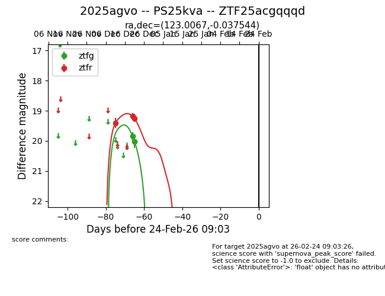
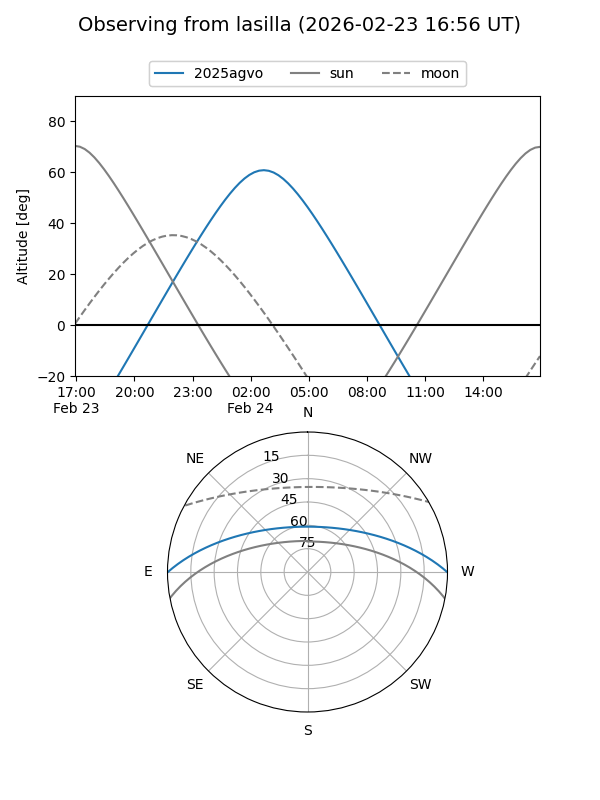
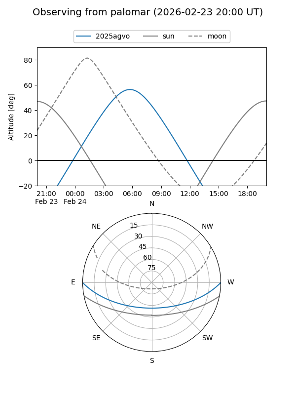

2025agvo
Target 2025agvo at 2025-12-21 11:07
Aliases and brokers:
FINK: fink-portal.org/ZTF25acgqqqd
Lasair: lasair-ztf.lsst.ac.uk/objects/ZTF25acgqqqd
ALeRCE: alerce.online/object/ZTF25acgqqqd
TNS: wis-tns.org/object/2025agvo
YSE: ziggy.ucolick.org/yse/transient_detail/2025agvo
alt names
ZTF25acgqqqd (ztf,fink_ztf)
2025agvo (tns,yse)
Coordinates:
equatorial (ra, dec) = 123.0067,-0.03754
equatorial (HMS+DMS) = 08:12:01.62,-00:02:15.16
galactic (l, b) = (222.4638,+17.83299)
Flags:
Photometry:
last ztfg=20.02, ztfr=19.26
2 ztfg, 3 ztfr detections
Lightcurve

Visibility


Additional plots